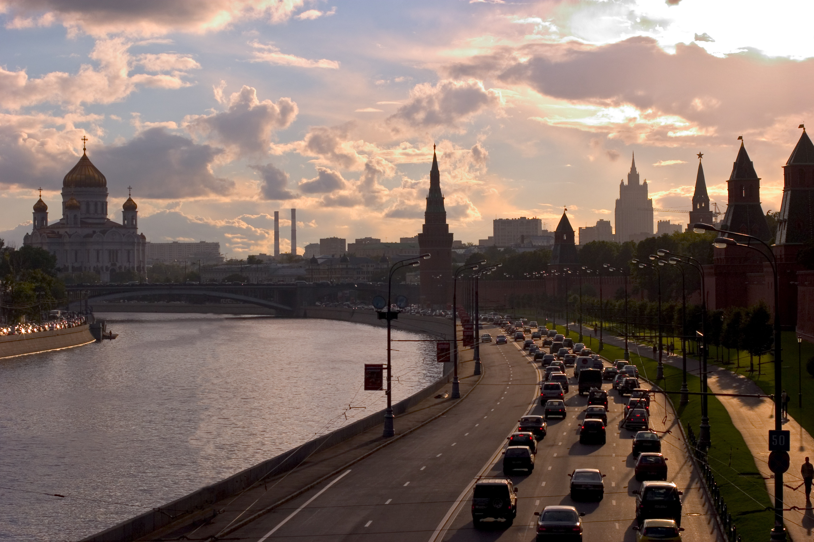
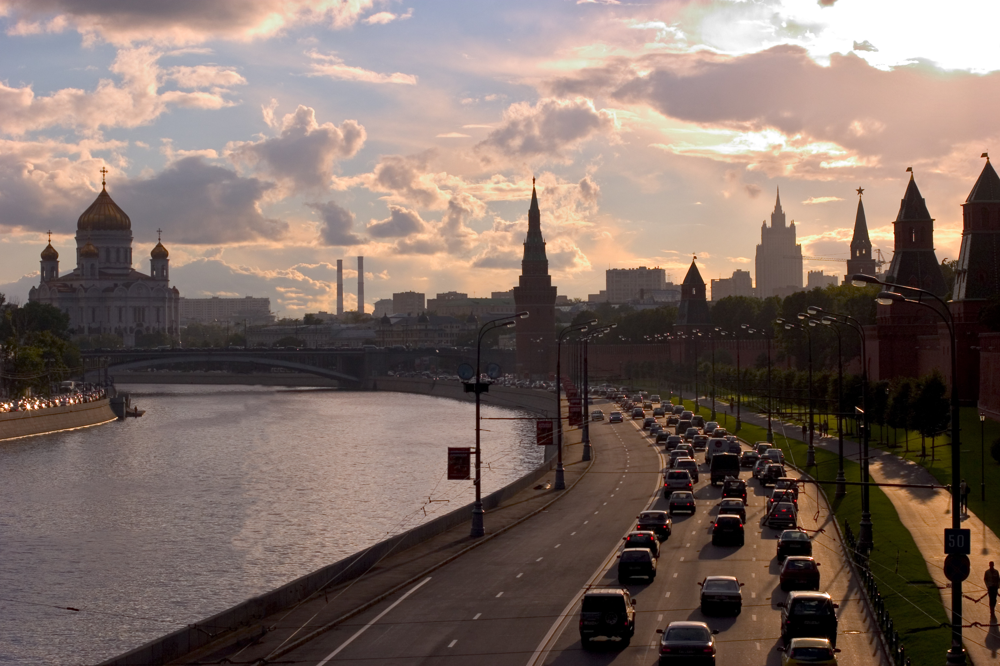

Pour satisfaire les désirs des plus voyageurs d'entre vous, notre compagnie vous propose une multitude de destinations tout autour du monde !
Afrique
Avec son climat chaleureux et ses paysages uniques, l'Afrique saura vous séduire.
Air UPEM vous donne le choix d'atterrir dans les plus grandes villes touristiques africaines:
Johannesburg, Le Caire, Casablanca et Alger vous ouvrent leurs portes, n'attendez plus !
Amérique du Nord
N'avez-vous jamais rêvé de pouvoir visiter certains des paysages nords-américains les plus connus ? Les grands canyons d'Arizona, les plaines enneigées d'Alaska...
Notre compagnie dessert l'aéroport de New-York-John-Fitzgerald-Kennedy, l'Aéroport international de Los Angeles et l'Aéroport international Pierre-Elliott-Trudeau de Montréal.
L'emplacement de ces destinations est propice à la decouverte des environnements alentours ou bien au déplacement vers votre paysage préféré !

Amérique du Sud
Bien que proche de l'Amérique du Nord, l'Amérique du Sud n'a rien à envier à ses voisins. La diversité de ses milieux saura combler vos besoins d'aventure !
Alternez entre les favelas de Rio de Janeiro, la region métropolitaine de São Paulo et les dangereuses forêts amazoniennes. Sensations garanties !
Notre compagnie dessert l'Aéroport international de Guarulhos et l'Aéroport international José Martí.
Antarctique
Malheureusement, l'Antarctique est le seul continent ne possèdant pas encore d'aéroport pouvant être desservi par la compagnie Air UPEM.
En effet, l'installation et l'exploitation d'un tel lieu est soumise à la réglementation draconienne du traité sur l'Antarctique.
Toute notre équipe vous présente ses plus sincères excuses et promet de vous tenir au courant de toute évolution à ce sujet.
Asie
Air UPEM pense à vous et vous offre la possibilité de découvrir une multitude de cultures propres aux pays asiatiques !
 
Notre compagnie dessert l'Aéroport international Chhatrapati-Shivaji, l'Aéroport international de Tokyo-Haneda et l'Aéroport de Moscou-Domodedovo.

Europe
L'europe est le continent le mieux desservi par notre compagnie.
Air UPEM est présente aux aéroports de Paris-Charles-de-Gaulle, de Francfort-Rhein/Main, de Léonard-de-Vinci de Rome Fiumicino, de Adolfo-Suárez de Madrid-Barajas et de Bruxelles
Océanie
Air UPEM vous propose de partir en Océanie !
Notre compagnie est présente sur ce continent à l'Aéroport Sydney-Kingsford Smith et à l'Aéroport d'Auckland.